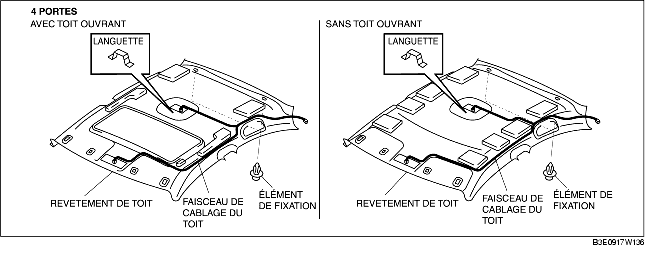
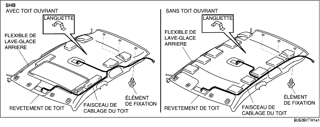

DEPOSE/REPOSE DU REVETEMENT DE TOIT
B3E091768040W01
1. Débrancher le cable négatif de la batterie.
2. Décoller partiellement le pli de jonction.
3. Déposer les pièces suivantes :
-
(1) Pli de jonction de toit ouvrant (véhicules avec toit ouvrant)
-
(2) Console (4SD) (voir la section DEPOSE/REPOSE DE CONSOLE.)
-
(3) Garniture de montant A (voir la section DÉPOSE/REPOSE DE GARNITURE DE MONTANT A.)
-
(4) Ancrage supérieur de ceinture de sécurité avant (voir la section DEPOSE/REPOSE DE CEINTURE DE SECURITE AVANT.)
-
(5) Bas de portière avant (voir la section DÉPOSE/REPOSE DE BAS DE PORTIÈRE AVANT.)
-
(6) Bas de portière arrière (voir la section DÉPOSE/REPOSE DU BAS DE PORTIÈRE ARRIÈRE.)
-
(7) Garniture inférieure de montant B (voir la section DÉPOSE/REPOSE DE GARNITURE INFÉRIEURE DE MONTANT B.)
-
(8) Garniture supérieure de montant B (voir la section DEPOSE/REPOSE DE GARNITURE SUPERIEURE DE MONTANT B.)
-
(9) Siège arrière (voir la section DÉPOSE/REPOSE DE SIÈGE ARRIÈRE.)
-
(10) Garniture de passage de roue (voir la section DÉPOSE/REPOSE DE GARNITURE DE PASSAGE DE ROUE.)
-
(11) Garniture supérieure latérale de coffre (5HB) (voir la section DÉPOSE/REPOSE DE GARNITURE SUPÉRIEURE LATÉRALE DE COFFRE.)
-
(12) Garniture de montant C (voir la section DEPOSE/REPOSE DE GARNITURE DE MONTANT C.)
-
(13) Lampe de lecture (voir la section DÉPOSE/REPOSE DE LAMPE DE LECTURE.)
-
(14) Lampe intérieure (voir la section DÉPOSE/REPOSE DE LAMPE INTÉRIEURE.)
-
(15) Pare-soleil (voir la section DÉPOSE/REPOSE DE PARE-SOLEIL.)
-
(16) Poignée de maintien (voir la section DÉPOSE/REPOSE DE POIGNÉE DE MAINTIEN.)
4. Débrancher le connecteur du faisceau de câblage de toit, et dégager de la carrosserie l'attache du connecteur du faisceau de câblage de toit.
5. Débrancher le flexible du lave-glace arrière. (5HB)
6. Déposer les éléments de fixation.


7. Déposer la languette du panneau de toit, et déposer le revêtement de toit.
8. Dégager le revêtement de toit par l'ouverture de la portière côté passager. (4SD)
9. Retirer le revêtement de toit du hayon ouvert. (5HB)
10. Pour la repose, suivre l'ordre inverse de la dépose.